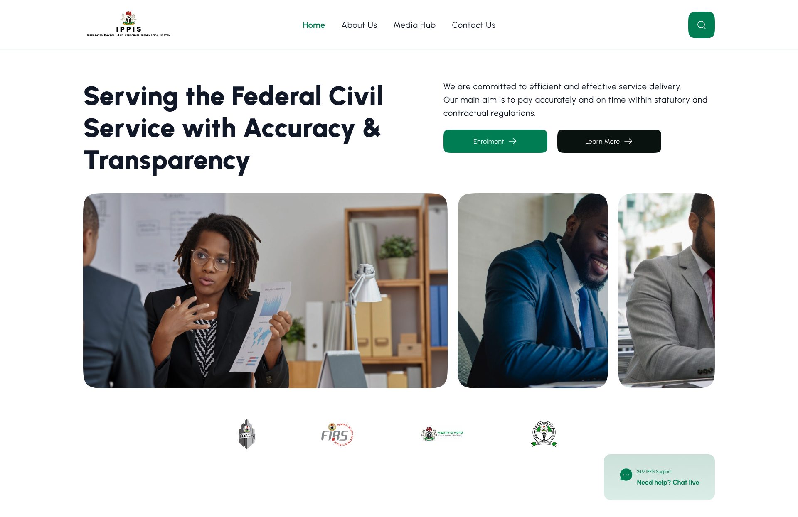
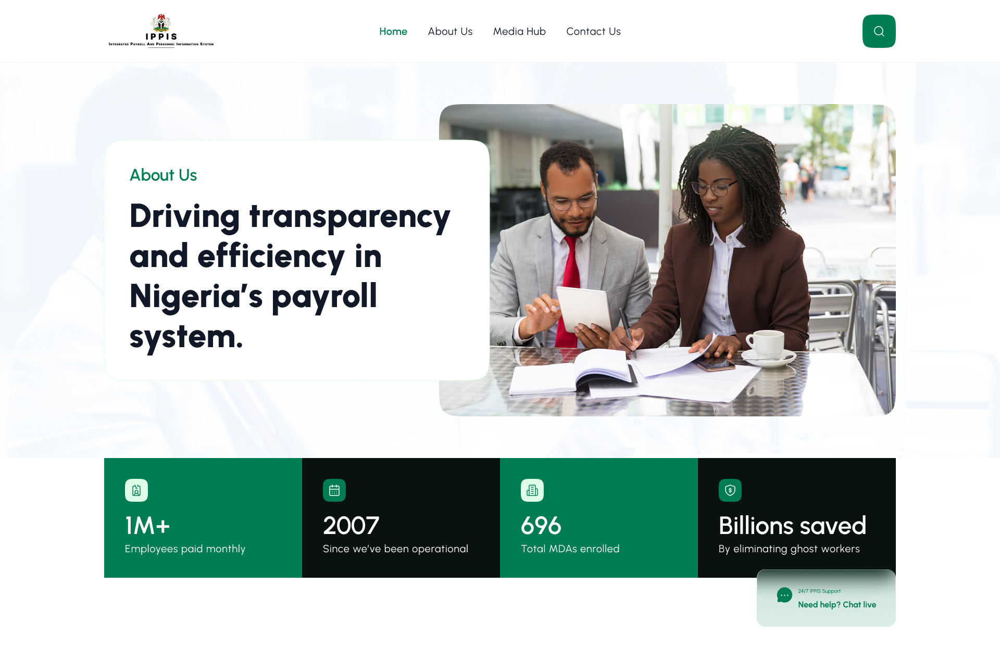
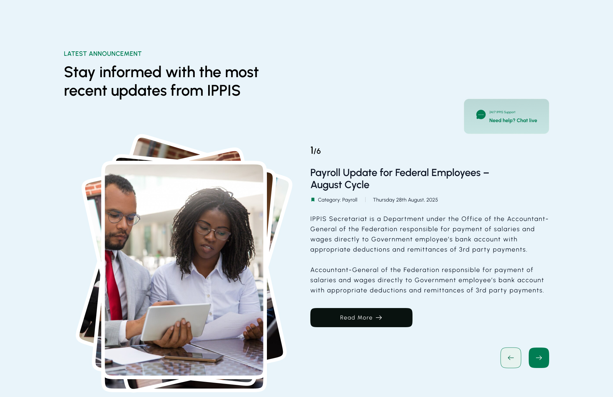
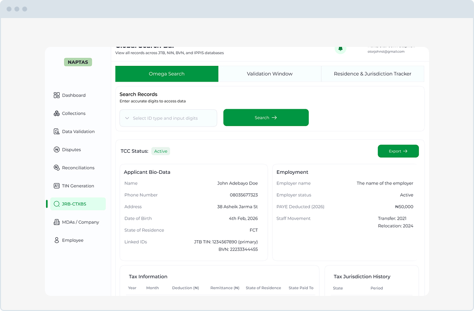
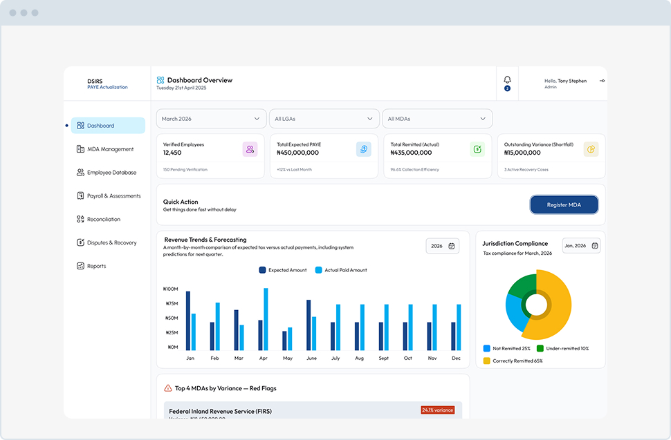

Unclear Navigation
Important information and user actions needed more visible, predictable paths through the site.
Public Sector · Digital Service Redesign
Product Design Engineer
2025
The Integrated Personnel and Payroll Information System handles payroll for more than 1.1 million federal employees, but its public-facing portal was difficult to navigate and lacked a responsive mobile experience. I explored a clearer, more accessible interface that brings key self-service tasks and support pathways into focus.

The redesign started with a straightforward question: can people find the right service without needing to understand the system behind it?
Important information and user actions needed more visible, predictable paths through the site.
The experience needed to adapt to smaller screens so essential tasks remained usable away from a desktop.
Enrollment and complaints needed clearer routes, with support options easier to understand and locate.
I focused on reducing the amount of interpretation required from users, bringing the information architecture and interface closer to the way people approach their tasks.
Give key services more prominence and structure pages so users can scan before they commit to a path.
Make enrollment, complaints, and support feel like clear user journeys instead of disconnected destinations.
Use flexible layouts, consistent spacing, and readable content across desktop and mobile breakpoints.
A look at selected screens from the interface work. These are presented as design explorations, not as measured production outcomes.


Design Outcome
The concept brings enrollment, complaints, and support into a more coherent responsive experience. The emphasis is on clearer navigation and task completion paths. Quantified usability or business results were not supplied for this project, so no performance figures are claimed here.

One search experience for reviewing complex taxpayer records.
View Case Study
An enterprise revenue intelligence and compliance dashboard.
View Case Study